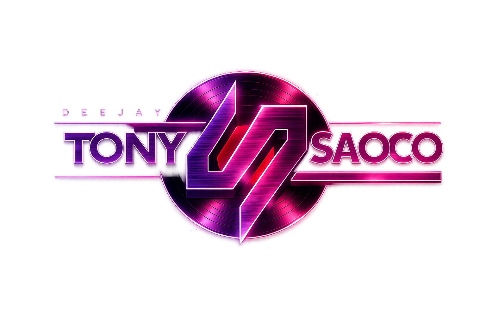

Próxima sesión
La Central
Sábado 29 de agosto de 2026
Tenerife
Entrada gratis hasta la 01:00 h

DJ
Cada sesión una nueva experiencia.
SALSA • CROSSOVER • REGUETÓN • RANCHENATO
Sábado 29 de agosto de 2026
Tenerife
Entrada gratis hasta la 01:00 h
Viernes 4 de septiembre de 2026
La Gomera
Sábado 5 de septiembre de 2026
Tenerife
Entrada gratis hasta la 01:00 h
Llevemos la fiesta a tu evento